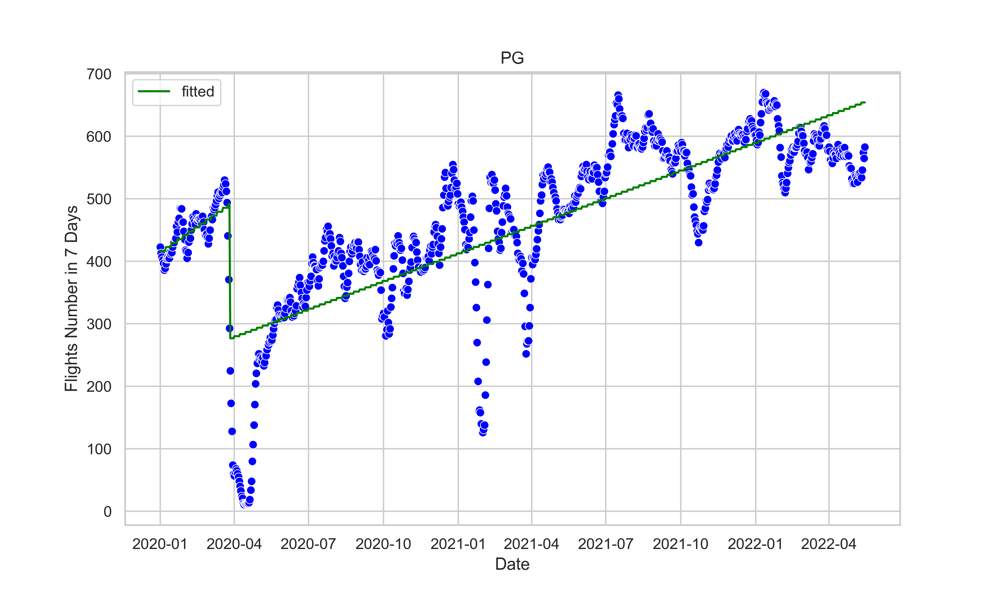

Analysis and Predicting on Aviation Data
Contents
Analysis and Predicting on Aviation Data#
Table 1: % Before- and After-Covid Comparisons
Country |
Number of Flights Before Covid |
Number of Flights During Covid |
Percantage Changed |
Number of Passengers Before Covid |
Number of Passengers Before Covid |
Percentage Changed |
|---|---|---|---|---|---|---|
Vanuatu |
26.792373 |
29.347409 |
9.536430 |
3028.190678 |
2553.804223 |
-15.66567 |
Solomon Islands |
7.199248 |
2.636678 |
-63.375645 |
935.939850 |
386.366782 |
-58.718845 |
Papua New Guinea |
454.928571 |
465.118774 |
2.239957 |
34249.642857 |
32915.454662 |
-3.895481 |
Fiji |
287.924051 |
67.417513 |
-76.584967 |
26749.341772 |
6948.908629 |
-74.022132 |
Regression Discontinuity in Time (RDiT)#

